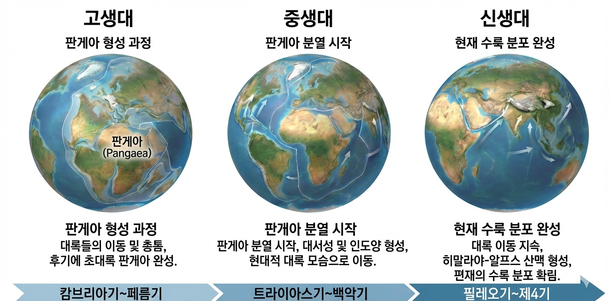

01. 대멸종이란?
- 정의:
비교적 짧은 시기 동안 지구상의 생물 종이 급격하게 감소하는 현상. (총 5회 발생) - 주요 원인 (복합적):
- 지각 변동: 대륙 이동, 화산 폭발.
- 기후 변화: 빙하기, 해수면 변동.
- 천체 충돌: 운석 충돌.
Self Check
Q. 지질 시대 동안 대규모 멸종은 총 몇 번 일어났나?
5번
02. 고생대 말 (최대 멸종)
- 주원인 1: 판게아 형성:
대륙이 하나로 합쳐짐 → 대륙붕(얕은 바다) 감소 → 해양 생물 대멸종 (삼엽충 등). - 주원인 2: 대규모 화산:
시베리아 트랩 폭발 → 온실 기체 급증 → 기온 상승/해양 산성화.
Self Check
Q. 가장 많은 생물 종(90% 이상)이 사라진 시기는?
고생대 말 (페름기 대멸종)
03. 중생대 말 (공룡 멸종)
- 주원인: 소행성 충돌:
멕시코 유카탄 반도 충돌.
→ 먼지가 햇빛 차단 → 기온 하강/식물 광합성 중단. - 결과:
공룡, 암모나이트 등 지배 파충류 멸종.
(새의 조상은 생존).

Self Check
Q. 중생대 말 대멸종의 유력한 원인 1가지는?
소행성(운석) 충돌
04. 대륙 이동과 환경
- 판게아 형성 (고생대 말):
해안선 길이 감소, 계절 변화 심화 (내륙 사막화). - 판게아 분리 (중생대 초~):
대륙 사이로 바다 유입 $\rightarrow$ 해안선 증가 $\rightarrow$ 서식지 다양화.
대서양, 인도양 형성.

| 시대 | 특징 및 영향 |
|---|---|
| 고생대 | 초대륙 판게아 형성 → 대륙붕 감소, 급격한 환경 변화, 대멸종 |
| 중생대 | 판게아 분리 → 해안선 증가, 대서양/인도양 형성, 온난 기후(빙하기 없음) |
| 신생대 | 현재와 비슷한 분포 → 히말라야/알프스 산맥 형성, 빙하기/간빙기 반복 |
Self Check
Q. 초대륙 판게아가 분리되기 시작한 시기는?
중생대 초 (트라이아스기)
05. 과거 기후 알아내기
- 빙하 코어 연구:
빙하 속 공기 방울 분석 → 과거 대기의 이산화 탄소 농도 측정. - 나이테/산호/화석:
나이테 간격(강수량/온도), 산호 성장률(수온), 시상 화석 등을 종합하여 추정.

Self Check
Q. 빙하 속 공기 방울로 알 수 있는 과거 정보는?
대기 성분 ($CO_2$ 농도 등)
06. 위기는 곧 기회?
- 일시적 감소:
대멸종 직후 생물 종의 수가 급감함. - 장기적 증가 (핵심!):
텅 빈 서식지를 살아남은 생물들이 차지하며 적응 방산(다양한 종으로 진화).
→ 생물 다양성 증가의 계기가 됨.
(예: 공룡 멸종 후 포유류 번성)
Self Check
Q. 대멸종 이후 장기적으로 생물 다양성은 어떻게 되었나?
증가했다